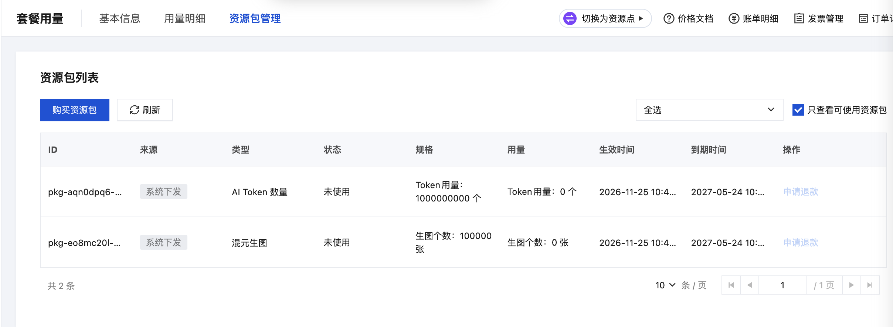
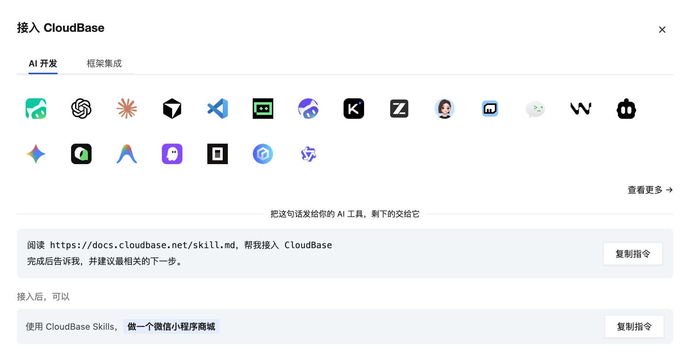
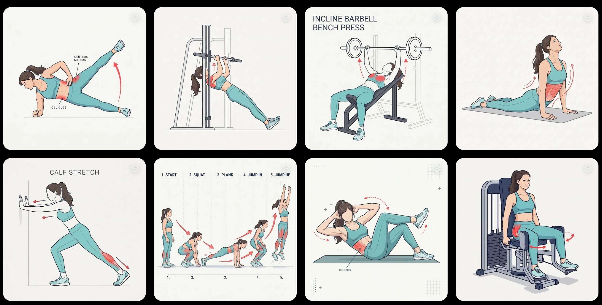

10 亿 Token、10 万张生图：我又让 Muse 薅了一次羊毛
10 亿混元 Token、10 万张 AI 生图、6 个月云开发环境，我又让 muse 薅羊了一次。
今天 muse 推送给我一个新的羊毛：10 亿混元 Token、10 万张 AI 生图。看着还挺心动的。
条件是，通过小程序开发页面去领取。初想想我应该还挺符合的吧？哈哈，毕竟我现在也是半个懂开发的人了。
给大家翻译一下：那 10 亿 Token，是近乎用不完的AI 开发的「口粮」。我昨天还刷到有网友成功把它接入Workbuddy了。换成人话：基本上做日常开发，算是衣食无忧了。
（这个其实对于国内用户玩上ai非常友好）
10 万张生图，基本上约等于你以后做任何图，都不用消耗 token 了。
还有云开发环境，我不太懂，应该就是不用自己买服务器，后台现成的。一分钱没花，当天就用起来了。

到账实拍：10 亿 Token、10 万张生图都在包里躺着了，有效期到 2027 年 5 月。
我这才意识到：现在做产品搞开发，最大的门槛，常常不是钱，也不是技术，是信息差——你根本不知道有这些羊毛可以薅啊。
领取路径给你们放这儿：
打开云开发控制台，首页有个「小程序专区」，点进「小程序成长计划」，按提示报名就能领。报名到今年年底截止，有小程序的别错过。（即便没有的，让muse或别的ai帮你直接拟一个项目）
就是这个卡片，点进去报名。


正在开发的女性版动作库：全套动作图已经生成完，后面会陆续接进小程序里。
说实话，这只是刚上路：动作视频还没接，AI 讲解还在开发，离「好用」差得远。
如今搞开发门槛没有消失，只是换了位置：从「你得会写代码」，变成「你得想清楚要什么」。
我是橘子哥，把 AI 真正用起来，落到一个个能摸得着的小产品上。一个专研AI落地的创新实践者。
结尾惊喜：彩蛋一则——我们团队的 AI 主播 Vivi，今天第一次上岗播报。
Vivi 试播新台词 · 1 分 37 秒